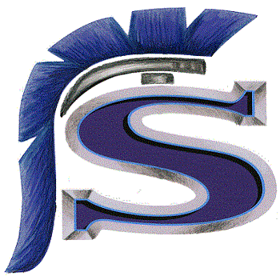
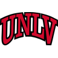
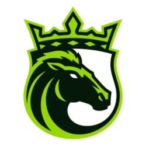

Tanner Brown

Saugus · Santa Clarita, CACollege of the Canyons (2018–2019) Atlanta Falcons (2024)
Atlanta Falcons (2024) New Orleans Saints (2026)
New Orleans Saints (2026)

UNLV (2020)Oklahoma State (2021–2022)Los Angeles Rams (2023–2024)Atlanta Falcons (2024)
Louisville Kings (2026)New Orleans Saints (2026)Notable2026 UFL Special Teams Player of the Year and United Bowl champion; 63-yard FG in the playoffs
Best FG seasonFG 22-23, long 52 · 2022
Top scoring108 pts · 2022
Best punt avg45.5 · 2020
Long punt55 yds · 2020
| 2018 | College of the Canyons (JUCO) FG 17-21, XP 44-44, 95 pts, Punts 44, avg 34.2, 16 TB (KO) |
| 2019 | College of the Canyons (JUCO) FG 11-17, long 50, XP 56-58, 89 pts, Punts 27, avg 39.1, 10 TB (KO) |
| 2020 | UNLV (FBS) GP 6, Punts 12, avg 45.5, long 55, I20 1, KO 24/1 TB |
| 2021 | Oklahoma State (FBS) GP 14, FG 17-21, long 49, XP 36-36, 87 pts |
| 2022 | Oklahoma State (FBS) GP 12, FG 22-23, long 52, XP 42-42, 108 pts |